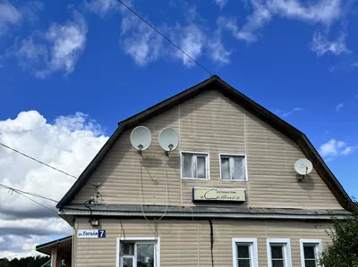
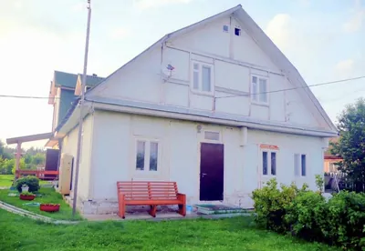
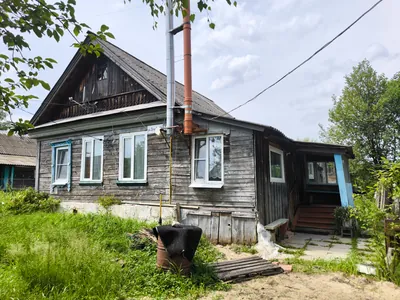

Наши дома
Три дома на одной территории: два больших рядом друг с другом и отдельный дом через дорогу. В больших домах можно снять спальное место, комнату, крыло, дом целиком или всю территорию. Дом через дорогу сдаётся только помесячно и целиком.
37 мест
посуточно в Домах №1 и №2
16 комнат
5 + 8 + 3 по домам
7 кухонь
на всех домах
2 бани
при больших домах

Дом №1
11 односпальных и 2 двуспальные кровати • зал с барной стойкой • 2 кухонные зоны • душевые и санузлы на обоих этажах • баня • кондиционер • Wi-Fi и ТВ
от 1 500 ₽ /сутки с человека
Подробнее о доме

Дом №2
22 односпальные и 2 двуспальные кровати, 2 дивана • 4 кухни • 4 санузла • 4 душевые • баня • кондиционер • Wi-Fi и ТВ
от 1 500 ₽ /сутки с человека
Подробнее о доме

Дом через дорогу
2 двуспальные и 1 односпальная кровать, диван • 1 кухня • душ и туалет • Wi-Fi и ТВ • своя территория
35 000 ₽ /месяц за дом целиком
Подробнее о доме
Сравнение домов
Чтобы быстро понять, что вам подходит.
| Что важно | Дом №1 | Дом №2 | Дом через дорогу |
|---|---|---|---|
| Как сдаётся | посуточно | посуточно | только помесячно, целиком |
| Цена | от 1 500 ₽ / сутки с человека | от 1 500 ₽ / сутки с человека | 35 000 ₽ / месяц за дом |
| Кроватей | 13 | 24 и 2 дивана | 3 и диван |
| Сколько человек | до 15 | до 28 | до 4 |
| Комнат | 5 | 8 | 3 |
| Кухонь | 2 | 4 | 1 |
| Санузлов | на обоих этажах | 4 | 1 |
| Душевых | 3 | 4 | 1 |
| Баня | да | да | нет |
| Кондиционер | да | да | нет |
| Wi-Fi и ТВ | да | да | да |
| Отопление (газ) | да | да | да |
| Мангал и беседка | да | да | мангал |
| Хорошо подходит | компании, бригаде | бригаде, мероприятию | долгой аренде: семье, паре, командировочным |
Дом №1 и Дом №2 стоят рядом на общей территории — их можно занять вместе под большое мероприятие или крупный заезд. Двуспальную кровать можно занять вдвоём — тогда два больших дома принимают до 43 человек.
Не знаете, что выбрать? Напишите количество гостей и даты — подскажем оптимальный вариант и посчитаем стоимость.